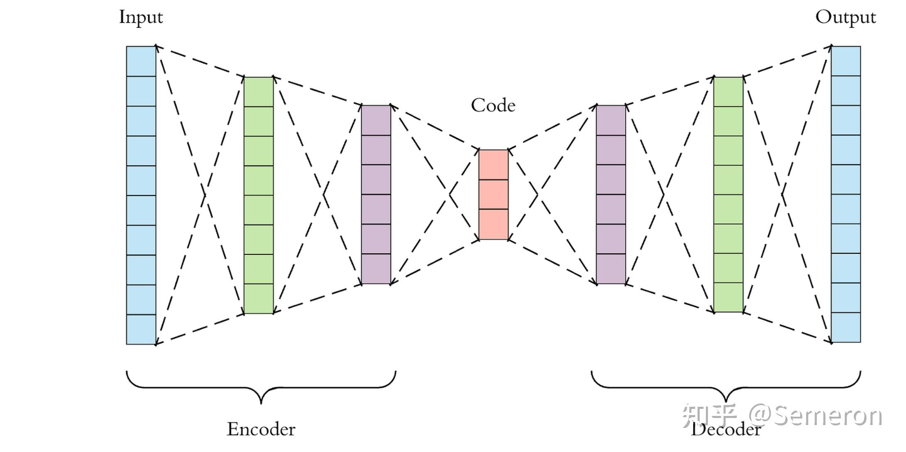
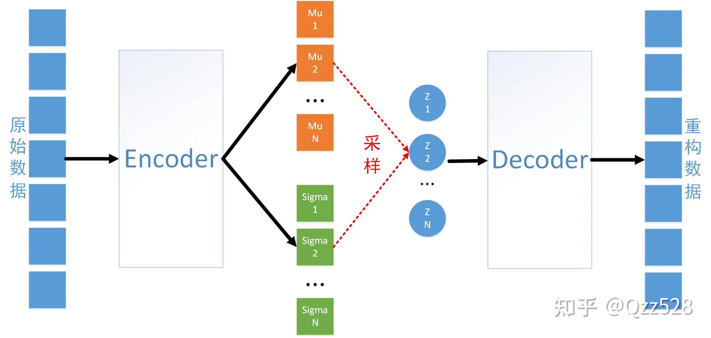
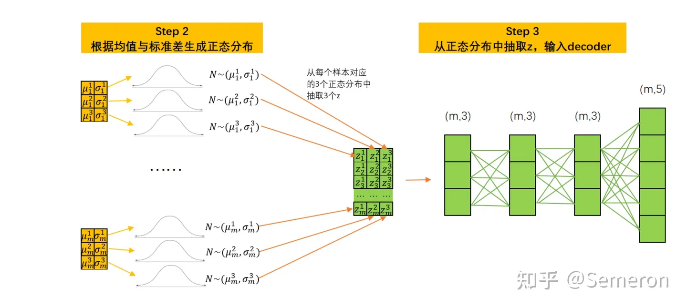
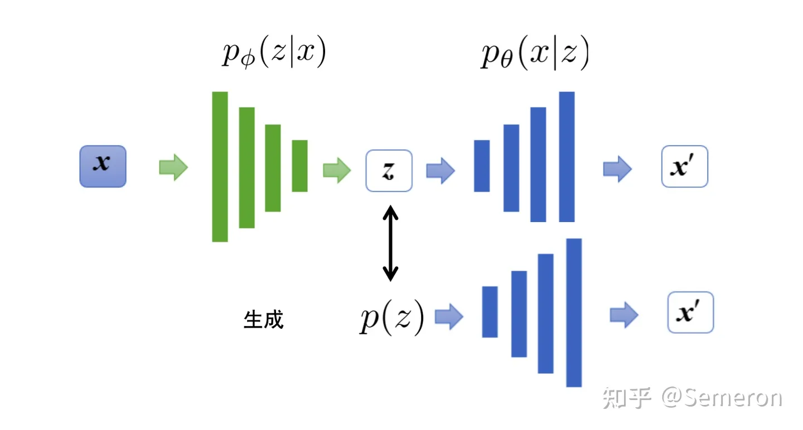
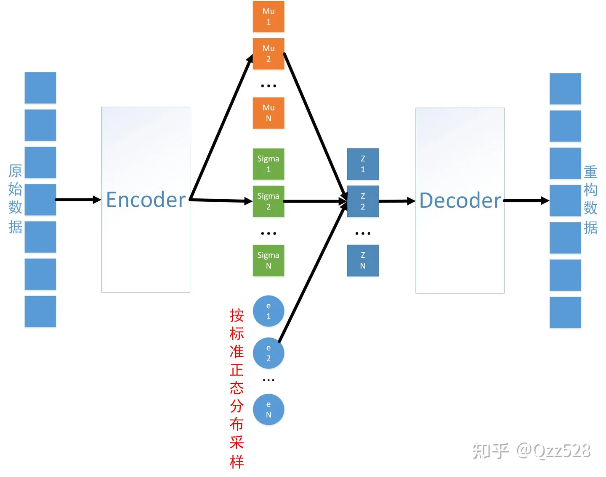
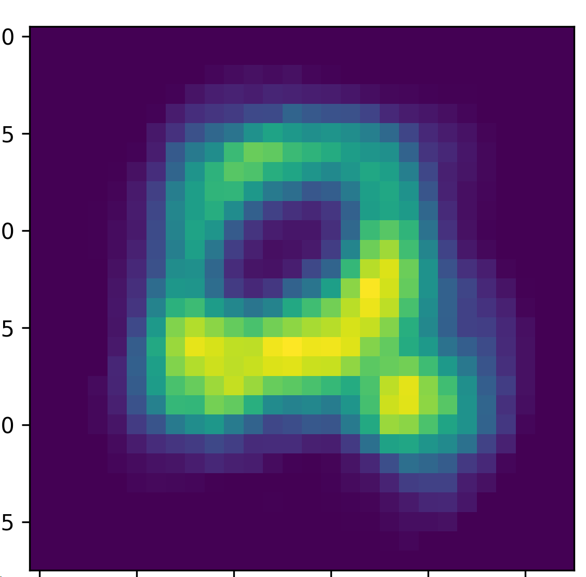
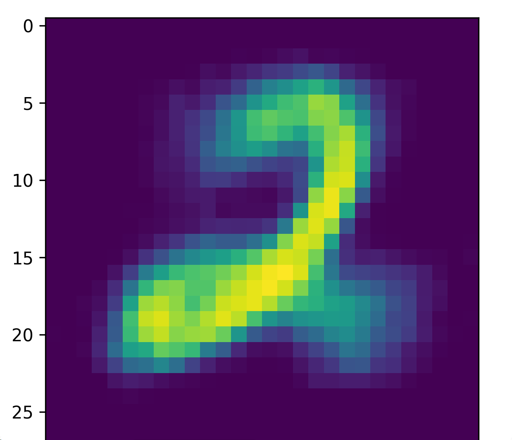

使用自编码器进行图片检索
1 自编码器简介
自编码器最初提出的目的是为了学习到数据的主要规律，进行数据压缩，或特征提取，是一类无监督学习的算法。后续各种改进的算法，使得自编码器具有生成能力，例如变分自编码器（VAE）的图像生成能力。
本次放的代码都是线性版本，在我的仓库中还有cnn版本，毕竟线性版本只能处理一下这种mnist小数据集。地址：https://github.com/Guoxn1/ai。
2 线性自编码器
自动编码器是由线性层构成的，它看起来就像是一个普通的深度神经网络DNN。
特点如下：输出层的神经元数量往往与输入层的神经元数量一致、网络架构往往呈对称性，且中间结构简单、两边结构复杂。

从输入层开始压缩数据、直至架构中心的部分被称为编码器Encoder，编码器的职责是从原始数据中提取必要的信息，从原始数据中提纯出的信息被称之为编码Code或隐式表示。从编码开始拓展数据、直至输出层的部分被称为解码器Decoder，解码器的输出一般被称为重构数据，解码器的职责是将提取出的信息还原为原来的结构。
结合minst数据集，写一个用线性自编码器进行图片检索的demo。
1 | |
这段代码可以选出test_loader中的相似图片。
3 卷积自编码器
将线性层替换为卷积层就是卷积自编码器。
代码部分有一点需要注意，在解码器中式中转置卷积进行维度扩张。
线性编码器会损失很多信息，所以改为卷积自编码器，对图像处理效果可能会更好。
1 | |
输出如下：
还是出现了一定的误判，但是整体还是可以的。可能是数据集太简单，过拟合了。
4 变分自动编码器
对于基本自编码器来说，只能够对原始数据进行压缩，不具备生成能力，也就是我们给解码器任意数据作为输入，解码器能够给我们生成我们想要的东西。主要原因是，基本自编码器给定一张图片生成原始图片，从输入到输出都是确定的，没有任何随机的成分，为了使模型表现很好，在不断的迭代训练中，编码器的输出也就是解码器的输入会趋于确定，这样才能让解码器能生成与输入数据更接近的数据，以使损失变得更小。但是这就与生成器的初衷有悖了。
对于VAE来说，编码器的输入是原始数据X，但解码器的输入不是编码器的输出了，而是从满足一定分布中随机抽样出的Z。因此当变分自动编码器被训练好之后，我们可以只取架构中的解码器来使用：只要对解码器输入满足特定分布的随机数Z，解码器就可以生成像从原始数据X中抽样出来的数据，如此就能够实现图像生成。许多论文已经证明，变分自动编码器的生成能力足以与一些生成对抗网络分庭抗礼，但这一架构在生成领域的局限也很明显：与GAN一样，变分自动编码器能够获得的信息只有随机数Z，因此在面临复杂数据时架构会显得有些弱小。
4.1 基本架构
与普通自动编码器一样，变分自动编码器有编码器Encoder与解码器Decoder两大部分组成，原始图像从编码器输入，经编码器后形成隐式表示（Latent Representation），之后隐式表示被输入到解码器、再复原回原始输入的结构。然而，与普通Autoencoders不同的是，变分自用编码器的Encoder与Decoder在数据流上并不是相连的，我们不会直接将Encoder编码后的结果传递给Decoder，而是要使得隐式表示满足既定分布。
①首先，变分自动编码器中的编码器会尽量将样本 X 所携带的所有特征信息的分布转码成类高斯分布。 ②编码器需要输出该类高斯分布的均值 u 与标准差 a 作为编码器的输出。 ③以编码器生成的均值u 与标准差 a 为基础构建高斯分布。 ④从构建的高斯分布中随机采样出一个数值 Z ，将该数值输入解码器。 ⑤解码器基于 Z进行解码，并最终输出与样本的原始特征结构一致的数据，作为VAE的输出X1 。

根据以上流程，变分自动编码器的Encoder在输出时，并不会直接输出原始数据的隐式表示，而是会输出从原始数据提炼出的均值 u 和标准差 a 。之后，我们需要建立均值为 u 、标准差为 a 的正态分布，并从该正态分布中抽样出隐式表示z，再将隐式表示z输入到Decoder中进行解码。对隐式表示z而言，它传递给Decoder的就不是原始数据的信息，而只是与原始数据同均值、同标准差的分布中的信息了。
4.2 正向传播、损失函数、重参数化
m个样本，每个样本有5个特征。
正向传播：


当前的均值和标准差不是真实数据的统计量，而是通过Encoder推断出的、当前样本数据可能服从的任意分布中的属性。我们可以令Encoder的输出层存在3个神经元，这样Encoder就会对每一个样本推断出三对不同的均值和标准差。这个行为相当于对样本数据所属的原始分布进行估计，但给出了三个可能的答案。因此现在，在每个样本下，我们就可以基于三个均值和标准差的组合生成三个不同的正态分布了。
每个样本对应了3个正态分布，而3个正态分布中可以分别抽取出三个数字z，此时每个隐式表示z就是一个形如(m,3)的矩阵。将这一矩阵放入Decoder，则Decoder的输入层也需要有三个神经元。此时，我们的隐式空间就是(m,3)。
对任意的自动编码器而言，隐式空间越大，隐式表示z所携带的信息自然也会越多，自动编码器的表现就可能变得更好，因此在实际使用变分自动编码器的过程中，一个样本上至少都会生成10~100组均值和标准差，隐式表示z的结构一般也是较高维的矩阵。
损失函数：

那么现在我们让编码器输出的概率分布和我们的先验的概率分布一样，这样就能够完成我们的生成任务。当然为了保证输出的精度，还需要让模型的输出 X1与模型的输入 X 存在一定的制约关系。
常用KL散度来表示两个分布之间的差异，KL散度越小，分布越接近。
由于这个抽样流程的存在，架构中的数据流是断裂的，因此反向传播无法进行。反向传播要求每一层数据之间必有函数关系，而抽样流程不是一个函数关系，因此无法被反向传播。为了解决这一问题，变分自动编码器的原始论文提出了重参数化技巧，这一技巧可以帮助我们在抽样的同时建立Z 与 u 和 a 之间的函数关系，这样就可以令反向传播顺利进行了。
也就是不对mu，sigma的正态分布进行采样，而是对0,1的标准正态分布进行采样，再由 采样值*sigma+mu 来获取z，此时z显然满足mu，sigma的正态分布，且z并非由于采样得到，可由上述公式进行求导和梯度反向传播。

4.3 代码实现
以mnist手写数据集为例。
1 | |
生成出的2的图像，怎么感觉还不如上面的第一个2。

篇幅受限，就不展示cnn_vae了，但是效果可以展示如下，可以看到，效果要好一点。都是根据已有的图片生成的噢。

5 CVAE 条件变分自编码器
我们上面是可以指定生成什么数字的，主要的原理就是给一个相关的图，比如给一个2的图，生成一个2，但是这有很多不便。
论文中标准结构的CVAE，encoder的输入变为原始的手写数字图像和数字类别信息的拼接，输出不变。decoder的输入变为正态分布采样z与数字类别信息的拼接，输出不变。
将数字类别信息作为条件加入到encoder和decoder的输入中，由此来指定数字类别生成对应的数字图片。
数字类别输入encoder和decoder前需要经过onehot encoding（独热编码），将0-9这个十类别的单个数字变为10维向量，该向量仅在数字值对应的位置上取1，其他位置取0。（例如：数字0对应的向量就是[1,0,0,0,0,0,0,0,0,0]，数字1对应的向量是[0,1,0,0,0,0,0,0,0,0]，等等）。
该行为的目的是把0-9这10个数字对应的数据无关化（互相垂直），独立化（平等对待，忽视其值的大小)。例如，onehot encoding前数字0到1，0与9的距离不同，但对于分类任务，所有数字是平等的，onehot后的十维向量，0到1的距离和0到9的距离相同，而且0-9这10个十维向量互相垂直，线性无关，谁也无法用剩余的来表示。
另一个角度，也可将这个10维向量看作是该手写数字图像对应的0-9这十种数字的概率，由于该数字图像的事实结果是0-9的某一个，所以对应维度的概率值为1，其他的维度为0。
除此之外，训练模型的目标与VAE无差别。
训练完成使用时，CVAE的decoder输入为n个标准正态分布的采样值，及指定的数字类别，输出为指定数字类别对应的手写数字图像。
这种加入条件的思路在wavenet，tacotron等声音模型中常使用，把人物的声音特征作为条件加入，可生成相同内容，但不同人声的语音。
代码：
1 | |

以上图片全是生成的，可见效果还是不错的，但是5和7的生成略微像6和9，可能是过拟合，也可能是模型的问题，但总体还是不错的。
还有一种代码是encoder不给标签，decoder给标签，感觉效果应该一般，没进行code，感觉效果会差。
上面是线性的条件变分自编码器，这边改成卷积的再生成一遍，篇幅原因，代码都在我的仓库中，效果如下：
全是生成的噢，可见，效果还是不错的，记住了空间信息，5和7的问题明显改善。
看到后面还有其他更有力的生成模型，之后会继续更新，这篇没还完噢。